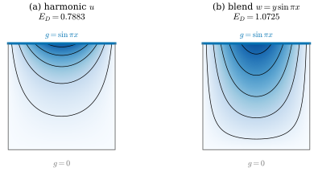
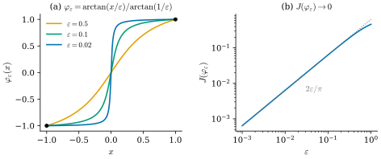

42.2 Dirichlet Energy, Harmonic Functions, and the Poisson Equation
Goals
- Dirichlet energy를 정의하고, boundary 값을 고정했을 때 그 critical point가 harmonic function임(Dirichlet's principle)을 first variation과 Green's identity로 증명할 수 있다.
- harmonic function의 mean value property와 maximum principle을 평면에서 증명하고, 닫힌 곡면에는 상수가 아닌 harmonic function이 없음을 설명할 수 있다.
- 닫힌 곡면에서 Poisson equation \(\Delta u = f\)가 풀릴 조건 \(\int_Sf\,dA = 0\)과 해의 유일성(상수 차이)을 증명하고, 평균을 빼는 trick의 뜻을 말할 수 있다.
- Poisson equation을 \(E_D(u) + \int fu\,dA\)의 최소화로 보고, discrete 1차원 판을 구현할 수 있다.
Prerequisites
- Proposition 42.1.12: Green's first identity, Corollary 42.1.13: 닫힌 곡면에서 \(\Delta\)의 성질
- Proposition 35.4.12(b): 평면의 divergence theorem
- Definition 35.5.2: L2 inner product, Lemma 35.5.7: test function으로 함수를 판별하기
Motivation
Section 42.1은 Laplacian의 여러 정의를 모았지만 하나를 남겨 두었다. Laplacian은 어떤 energy의 gradient다. 이것을 보려면 먼저 그 energy가 왜 자연스러운지 알아야 한다. 그 출발점은 interpolation problem이다 [CMU-DDG L18] slides 32–33. 영역의 boundary에서만 값이 주어졌을 때, 또는 몇 점에서만 값을 알 때, 나머지를 어떻게 채우는가? 온도를 boundary에서만 쟀을 때 안쪽의 온도, 몇 개의 vertex에만 색을 칠했을 때 mesh 전체의 색, scattered data의 interpolation이 모두 이 문제다.
답은 “가장 매끄럽게” 채운 함수이고, 그 말을 수로 정하는 것이 이 절의 일이다. 1차원에서는 답이 분명하다. 두 끝 값만 주어지면 두 점을 잇는 직선을 고른다. 직선은 기울기가 어디서나 같아서, 어느 한 곳도 필요 이상으로 가파르지 않다. 2차원에서도 같은 생각을 쓴다. 함수가 곳곳에서 얼마나 가파른지를 영역 전체에서 더한 양을 만들고, boundary 값을 지키는 함수 가운데 그 양이 가장 작은 것을 고른다.
Dirichlet Energy and Dirichlet's Principle
이 절에서 \(S\)는 compact oriented surface이고 boundary가 있을 수 있다. 평면의 bounded domain(예: unit disk, 정사각형)도 \(S\)로 둘 수 있다(정사각형처럼 모서리가 있는 경우의 Stokes's theorem은 Theorem 35.4.8). 함수는 \(S\)를 포함하는 open set에서 smooth라고 둔다.
Definition 42.2.1 (Dirichlet energy). smooth 함수 \(u\)에 대하여
를 \(u\)의 Dirichlet energy(디리클레 에너지)라 한다. 둘째 식의 \(\norm{\cdot}\)는 1-form의 L2 norm(Definition 35.5.2)이다.
\(E_D(u) \ge 0\)이고, connected \(S\)에서 \(E_D(u) = 0\)은 \(u\)가 상수라는 것과 같다(Corollary 42.1.13(d)의 증명). integrand \(\abs{\grad u}^2\)는 값이 빨리 변하는 곳에서 크다. 그래서 \(E_D\)는 “상수에서 얼마나 벗어났는가”를 재는 가장 단순한 2차식이다 [CMU-DDG L18] slide 35.
Example 42.2.2 (energies of the running examples). (a) unit disk \(B\)에서 \(u = x\)는 \(\abs{\grad u} = 1\)이므로 \(E_D = \tfrac12\cdot\pi = \tfrac{\pi}{2}\)이다. (b) saddle의 높이 \(u = x^2 - y^2\)는 \(\norm{du}_B^2 = 2\pi\)이므로(Example 35.5.4(b)) \(E_D = \pi\)이다. (c) unit sphere의 \(z\)는 \(\grad z\)가 \(e_3\)의 tangent 성분 \(e_3 - z\mathbf{x}\)이므로 \(\abs{\grad z}^2 = 1 - z^2\)이고 \(E_D = \tfrac12\int(1 - z^2)\,dA = \tfrac12(4\pi - \tfrac{4\pi}{3}) = \tfrac{4\pi}{3}\)이다. Green's identity로도 \(-\tfrac12\int z\,\Delta z\,dA = \int z^2\,dA = \tfrac{4\pi}{3}\)이다(Example 42.1.11).
Verification: verify/v-42-2-dirichlet-poisson.py
Non-example 42.2.3 (a jump has infinite energy). unit square \([0, 1]^2\)에서 왼쪽 변의 값을 \(0\), 오른쪽 변의 값을 \(1\)로 정하고(위아래 변의 값은 정하지 않는다) \(x = \tfrac12\)에서 값이 \(0\)에서 \(1\)로 뛰는 조각별 상수 함수로 채우면, 그 함수는 미분할 수 없어 \(E_D\)가 정의되지 않는다. 뛰는 곳을 폭 \(2\delta\)의 ramp \(u_\delta = \min\big(1, \max(0, \tfrac12 + (x - \tfrac12)/(2\delta))\big)\)로 바꾸면 \(\abs{\grad u_\delta}^2 = 1/(4\delta^2)\)인 띠의 넓이가 \(2\delta\)이므로 \(E_D(u_\delta) = \tfrac12\cdot\tfrac{2\delta}{4\delta^2} = \tfrac{1}{4\delta}\)이고, 뛰는 것에 가까워질수록(\(\delta \to 0\)) energy가 끝없이 커진다(ramp는 piecewise smooth라 위의 적분이 그대로 뜻을 갖는다). 반면 \(u = x\)도 왼쪽 변에서 \(0\), 오른쪽 변에서 \(1\)이고 \(E_D = \tfrac12\)이다.
Verification: verify/v-42-2-dirichlet-poisson.py
이제 boundary 값 \(g\)를 고정하고 \(E_D\)를 최소화하자. 비교할 함수의 모임을 \(\mathcal{A}_g := \{u : u|_{\partial S} = g\}\)라 하면, \(u \in \mathcal{A}_g\)이고 \(v|_{\partial S} = 0\)인 \(v\)에 대해 \(u + tv \in \mathcal{A}_g\)이다. 이런 \(v\)가 “허용되는 변화”다.
Theorem 42.2.4 (Dirichlet's principle). \(S\)가 connected이고 \(\partial S \ne \emptyset\)이며 \(g\)가 \(\partial S\) 위의 함수라 하자.
- (a) \(u \in \mathcal{A}_g\)가 \(E_D\)의 critical point, 곧 \(v|_{\partial S} = 0\)인 모든 smooth \(v\)에서 \(\tfrac{d}{dt}E_D(u + tv)\big|_{t=0} = 0\)인 것은 \(S\)의 interior에서 \(\Delta u = 0\)인 것과 같다.
- (b) \(u \in \mathcal{A}_g\)가 \(\Delta u = 0\)을 만족하면 모든 \(w \in \mathcal{A}_g\)에 대하여
이다. 따라서 \(u\)는 \(\mathcal{A}_g\)에서 \(E_D\)의 유일한 최솟점이다.
Proof idea: \(E_D\)는 2차식이므로 \(E_D(u + tv)\)는 \(t\)의 2차 다항식이고, 1차 계수를 Green's identity로 \(-\int v\,\Delta u\)로 바꾼다. 허용되는 \(v\)가 boundary에서 \(0\)이므로 boundary 항이 사라진다.
Proof. \(\abs{\grad(u + tv)}^2\) \(= \abs{\grad u}^2 + 2t\inner{\grad u}{\grad v}\) \(+ t^2\abs{\grad v}^2\)이므로
이다. (42.1.7)을 \(u\)와 \(v\)에 쓰면 \(v|_{\partial S} = 0\)이므로 \(\int_S\inner{\grad u}{\grad v}\,dA = -\int_Sv\,\Delta u\,dA\)이다. (a) \(\Delta u = 0\)이면 1차 계수가 \(0\)이다. 거꾸로 1차 계수가 모든 허용되는 \(v\)에서 \(0\)이면, 특히 interior의 작은 coordinate disk 안에 support를 갖는 모든 \(v\)에서 \(\int v\,\Delta u\,dA = 0\)이다. Lemma 35.5.7과 같은 논법(bump function \(v\)를 \(\Delta u\)의 부호가 일정한 작은 disk에 둔다)으로 continuous 함수 \(\Delta u\)는 interior의 모든 점에서 \(0\)이다. (b) \(v = w - u\)는 \(\partial S\)에서 \(0\)이다. \(t = 1\)에서 (42.2.3)의 1차 항은 \(-\int v\,\Delta u = 0\)이므로 (42.2.2)이다. \(E_D(w - u) \ge 0\)이므로 \(E_D(w) \ge E_D(u)\)이고, 등호이면 \(E_D(w - u) = 0\)이라 \(w - u\)가 상수이며(connected), \(\partial S\)에서 \(0\)이므로 \(w = u\)이다.
이 정리가 말하는 것: boundary 값을 정했을 때 가장 매끄러운 함수는 Laplace equation의 해이고, 거꾸로 Laplace equation의 해는 가장 매끄러운 함수다 [CMU-DDG L18] slide 36. 이 대응을 Dirichlet's principle(디리클레 원리)이라 부른다. (42.2.3)을 gradient의 언어로 읽으면 \(E_D\)의 L2 gradient는 \(-\Delta u\)이다. 곧 \(-\Delta\)는 Dirichlet energy의 gradient이고, Section 42.1에서 남겨 둔 마지막 정의가 이것이다.
정리는 harmonic인 \(u \in \mathcal{A}_g\)가 있으면 그것이 최솟점이라고 말한다. 그런 \(u\)가 있다는 것, 곧 Dirichlet problem의 해의 존재는 이 정리가 주지 않는다. boundary가 매끄럽고 \(g\)가 smooth이면 boundary까지 smooth한 해가 있다는 것은 사실이지만, 그 증명에는 함수 공간의 해석학이 필요하므로 진술만 한다(Go deeper). 아래 History 상자는 왜 이 구별이 중요했는지 보여 준다.

dgmesh.grid_mesh(\(32\times32\)칸)에서 cotan Laplacian으로 푼 discrete harmonic interpolant는 \(u\)와 vertex에서 \(2.8\times10^{-4}\) 안에서 같고, 그 discrete energy \(-\tfrac12u^{\mathsf T}Lu\)는 \(0.7890\)이다. 본문과의 연결: Theorem 42.2.4, (42.2.2), Exercise 42.2.6.Figure 42.2.1의 두 패널을 비교하자. 위쪽 변에서는 두 함수 모두 \(\sin\pi x\)이고 나머지 변에서는 \(0\)이다. 차이는 안쪽에 있다. (b)의 blend는 위에서 아래로 일정한 비율로 값을 줄이므로, 아래쪽 변 근처에도 값이 남아 있고 양옆 변에서는 값이 급하게 \(0\)으로 떨어진다. (a)의 harmonic 함수는 “이웃의 평균” 조건(Proposition 42.1.2) 때문에 \(0\)인 세 변의 영향을 고르게 받아, 위쪽 변에서 멀어질수록 지수적으로(\(\sinh\pi y\)) 줄어든다. energy의 차이 \(0.2841\)는 (42.2.2)대로 두 함수의 차이 자체의 energy와 같다. mesh 위의 discrete 판은 Section 42.5에서 Dirichlet boundary condition으로 다시 만난다.

Figure 42.2.2의 (a)에서 파란 곡선이 거의 계단이라는 것을 보자. Dirichlet energy였다면 계단은 energy가 무한대인 최악의 함수였다(Non-example 42.2.3). 이 energy에서는 \(x = 0\) 근처의 무게 \(x^2\)가 작아서 계단이 오히려 최선에 가깝다. (b)의 파란 직선은 기울기 \(1\)로 내려가며 \(0\)에 닿지 않는다.
Harmonic Functions
Definition 42.2.5 (harmonic function). open set \(U \subseteq \R^n\) 또는 곡면의 interior에서 smooth 함수 \(u\)가 \(\Delta u = 0\)을 만족하면 \(u\)를 harmonic function(조화함수)이라 한다.
Example 42.2.6 (harmonic functions in the plane). affine 함수, \(x^2 - y^2\), \(xy\), \(x^3 - 3xy^2\)은 \(\R^2\)에서 harmonic이고, \(\log r\)은 \(\R^2\setminus\{0\}\)에서 harmonic이다(Exercise 42.1.1). unit disk에서 boundary 값 \(\cos\vartheta\)(\(\vartheta\)는 polar angle)의 harmonic extension은 \(u = x\)다. \(x\)는 harmonic이고 unit circle에서 \(\cos\vartheta\)이며, Theorem 42.2.4(b)에 의해 이런 함수는 하나뿐이다. 같은 이유로 boundary 값 \(\cos 2\vartheta\)의 harmonic extension은 \(x^2 - y^2 = r^2\cos 2\vartheta\)이다(Exercise 42.2.1).
Non-example 42.2.7 (closed surfaces have no interesting harmonic functions). boundary 없는 compact connected surface에서 harmonic function은 상수뿐이다(Corollary 42.1.13(d)). 이것을 energy로 말하면 \(\Delta u = 0\)일 때 \(E_D(u) = -\tfrac12\int u\,\Delta u\,dA = 0\)이기 때문이다. 예를 들어 unit sphere의 \(z\)는 \(\R^3\)의 함수로는 harmonic(linear)이지만 sphere 위에서는 \(\Delta z = -2z \ne 0\)이다. 닫힌 곡면 위에서 상수가 아닌 함수를 만들려면 boundary 조건이나 원천(아래의 Poisson equation)이 필요하다 [Cr §6.1].
harmonic function의 가장 기본적인 성질은 Proposition 42.1.2의 극한이 \(0\)이라는 것을 넘어, 평균이 정확히 중심 값이라는 것, 곧 mean value property(평균값 성질)이다(Figure 42.1.1(b)의 초록 직선).
Proposition 42.2.8 (mean value property in the plane). \(U \subseteq \R^2\)가 open set이고 \(u\)가 \(U\)에서 harmonic이며 closed disk \(\overline{B_\varepsilon(p)} \subseteq U\)이면
이다.
Proof. \(0 \lt s \le \varepsilon\)에 대해 \(m(s)\)를 반지름 \(s\)인 원 위의 평균(오른쪽 식에서 \(\varepsilon\)을 \(s\)로 바꾼 것)이라 하자. \(u\)가 smooth이므로 적분 안에서 미분할 수 있고, \(\omega(t) = (\cos t, \sin t)\)는 원 \(\partial B_s(p)\)의 outward unit normal이므로
\[ \begin{aligned} m'(s) &= \frac{1}{2\pi}\int_0^{2\pi}\inner{\grad u(p + s\omega)}{\omega}\,dt \\ &= \frac{1}{2\pi s}\oint_{\partial B_s(p)}\inner{\grad u}{\mathbf{n}}\,ds' \\ &= \frac{1}{2\pi s}\int_{B_s(p)}\Delta u\,dA = 0 \end{aligned} \]
이다(\(ds' = s\,dt\), 셋째 등호는 divergence theorem Proposition 35.4.12(b)). 따라서 \(m\)은 상수이고, \(u\)가 continuous이므로 \(s \to 0\)에서 \(m(s) \to u(p)\)이다. 그러므로 \(m(\varepsilon) = u(p)\)이다.
Corollary 42.2.9 (maximum principle in the plane). \(U \subseteq \R^2\)가 bounded connected open set이고 \(u\)가 \(U\)에서 harmonic이며 \(\overline U\)에서 continuous라 하자. (a) \(u\)가 \(U\)의 한 점에서 \(\overline U\) 위의 최댓값을 가지면 \(u\)는 상수다. (b) 따라서 \(\max_{\overline U}u = \max_{\partial U}u\)이고, 최솟값도 같다.
Proof. (a) \(m = \max_{\overline U}u\)라 하고 \(A = \{p \in U : u(p) = m\}\)이라 하자. \(A\)는 \(u\)의 continuity로 \(U\) 안에서 closed이다. \(p \in A\)이고 \(\overline{B_\varepsilon(p)} \subseteq U\)이면, 반지름 \(s \le \varepsilon\)인 모든 원에서 (42.2.4)로 평균이 \(m\)이고 \(u \le m\)이므로, continuous 함수 \(m - u \ge 0\)의 원 위 적분이 \(0\)이 되어 원 위에서 \(u = m\)이다. 따라서 \(B_\varepsilon(p) \subseteq A\)이고 \(A\)는 open이다. \(U\)가 connected이고 \(A \ne \emptyset\)이므로 \(A = U\)이다. (b) \(\overline U\)는 compact이므로 \(u\)는 최댓값을 갖는다(extreme value theorem, Theorem 3.6.10). 그 점이 \(U\)에 있으면 (a)에 의해 \(u\)가 상수이고, 어느 경우든 최댓값이 \(\partial U\)에서도 나온다. 최솟값은 \(-u\)에 쓴다.
이 성질을 maximum principle(최대 원리)이라 부른다. harmonic function은 안쪽에 봉우리나 골짜기를 만들지 않는다. 온도의 평형 상태에서 가장 뜨거운 곳은 boundary에 있다는 물리적 직관과 같다 [CMU-DDG L18] slide 38. 곡면 위에서도 maximum principle은 성립하지만(elliptic operator의 maximum principle, 진술만 한다), mean value property는 곡률 때문에 정확하지 않다. mesh 위에서는 사정이 다르다. cotan weight가 모두 양수이면 discrete harmonic function의 값이 이웃의 convex combination이 되어 maximum principle이 성립하고, non-Delaunay edge의 음수 weight는 그것을 깰 수 있다(Exercise 36.6.5, Figure 31.3.2(c)).
The Poisson Equation
평형 상태의 온도가 Laplace equation이었다면, 안쪽에 열원이 있을 때의 평형 상태는 다음 방정식이다.
Definition 42.2.10 (Poisson equation). 주어진 함수 \(f\)에 대하여
를 Poisson equation(푸아송 방정식)이라 한다. \(f = 0\)이면 Laplace equation이다.
물리에서 \(f\)는 질량이나 전하의 밀도이고 \(u\)는 그 potential이다. geometry processing에서는 smoothing, vector field의 integration(Section 31.5의 Poisson reconstruction), 거리 계산(Chapter 44)이 이 방정식을 푼다 [Cr §6.1]. boundary가 있으면 boundary 조건을 함께 주어야 하고, 그것은 Section 42.5의 주제다. 여기서는 boundary 없는 곡면을 본다.
Proposition 42.2.11 (the Poisson equation on a closed surface). \(S\)가 boundary 없는 compact connected oriented surface이고 \(\abs{S}\)가 그 넓이, \(f\)가 smooth 함수라 하자.
- (a) (42.2.5)가 smooth한 해를 가지면 \(\int_Sf\,dA = 0\)이다.
- (b) 두 해의 차는 상수다.
- (c) \(\int_Sf\,dA = 0\)이면 smooth한 해가 있다.
- (d) \(\bar f := \tfrac{1}{\abs{S}}\int_Sf\,dA\)라 하면 \(f - \bar f\)는 상수 함수들과 L2-orthogonal이고, \(\Delta u = f - \bar f\)는 언제나 풀린다.
Proof. (a) Corollary 42.1.13(b)로 \(\int f = \int\Delta u = 0\)이다. (b) 두 해의 차 \(w\)는 \(\Delta w = 0\)이므로 Corollary 42.1.13(d)에 의해 상수다. (c)는 진술만 한다. 증명에는 elliptic equation의 이론(Fredholm alternative)이 필요하다. (d) \(\int(f - \bar f)\cdot c\,dA = c\big(\int f - \bar f\abs{S}\big) = 0\)이다. 해의 존재는 (c)다.
(a)와 (b)는 matrix의 언어로 보면 당연하다. \(\Delta\)는 self-adjoint이고 kernel이 상수이므로, image는 kernel의 orthogonal complement, 곧 평균이 \(0\)인 함수들이다. (d)의 \(f - \bar f\)는 \(f\)를 그 부분공간으로 orthogonal projection한 것이다. 물리적으로는 “열원과 같은 양의 흡수를 곡면 전체에 고르게 뿌린 것”이다. 닫힌 곡면에서는 열이 빠져나갈 곳이 없으므로, 들어온 열이 \(0\)이 아니면 평형 상태가 없다. 다만 평균을 빼는 것은 문제를 바꾸는 일이다. 원래 문제의 \(f\)에 상수 성분이 의미가 있다면(예: 실제로 그만큼의 열원이 있다면) 평균을 빼서 얻은 해는 원래 질문의 답이 아니다. 이 trick은 문제의 뜻에 맞는지 확인하고 쓴다 [Cr §6.1].
Example 42.2.12 (Poisson problems on the unit sphere). (a) \(\Delta u = z\): \(\int z\,dA = 0\)이고 \(\Delta z = -2z\)(Example 42.1.11)이므로 \(u = -\tfrac{z}{2} + c\)가 모든 해다. (b) \(\Delta u = 1\)은 해가 없다(\(\int1\,dA = 4\pi\)). (c) \(\Delta u = 1 + z\)는 \(\bar f = 1\)이므로 평균을 빼면 (a)가 된다. mesh 위에서 같은 문제를 푸는 것이 Section 42.3과 Section 42.6이다.
Verification: verify/v-42-2-dirichlet-poisson.py
Poisson equation도 energy의 최소화로 쓸 수 있다. Dirichlet energy에 \(f\)와의 inner product를 더한다.
Proposition 42.2.13 (the variational form of the Poisson equation). \(S\)가 Proposition 42.2.11과 같고
라 하자. (a) \(\int_Sf\,dA \ne 0\)이면 \(J\)는 아래로 유계가 아니다. (b) \(\int_Sf\,dA = 0\)이면 \(u\)가 \(J\)의 critical point인 것과 \(\Delta u = f\)는 동치이고, 이때 모든 \(v\)에서 \(J(u + v) = J(u) + E_D(v) \ge J(u)\)이며 최솟값은 \(J(u) = -E_D(u) = \tfrac12\int_Sfu\,dA\)이다.
Proof. (a) 상수 \(c\)에서 \(J(c) = c\int f\,dA\)이고, \(c\)의 부호를 맞추어 \(\abs{c}\)를 키우면 \(-\infty\)로 간다. (b) (42.2.3)과 (42.1.7)(boundary 항 없음)에서 \(J(u + tv)\) \(= J(u) + t\int(f - \Delta u)v\,dA + t^2E_D(v)\)이다. 1차 계수가 모든 \(v\)에서 \(0\)인 것은 Theorem 42.2.4(a)의 증명과 같은 논법으로 \(\Delta u = f\)와 동치이고, 그때 \(t = 1\)로 두면 \(J(u + v) = J(u) + E_D(v)\)이다. 마지막으로 \(\int fu = \int u\,\Delta u = -2E_D(u)\)이므로 \(J(u) = E_D(u) - 2E_D(u)\) \(= -E_D(u) = \tfrac12\int fu\)이다.
부호를 확인하자. \(f \gt 0\)인 곳에서 \(\int fu\)를 줄이려면 \(u\)가 작아져야 하므로 해는 \(f\)가 큰 곳에서 움푹 들어간다. 실제로 \(\Delta u = f \gt 0\)인 곳은 Proposition 42.1.2에 의해 둘레보다 값이 작은 곳이다. 강의 슬라이드가 쓰는 다른 변분 문제, 곧 vector field \(X\)에 가장 잘 맞는 gradient를 찾는 \(\min_u\int\abs{\grad u - X}^2\)도 같은 계산으로 \(\Delta u = \divg X\)를 준다 [CMU-DDG L18] slide 42. 이것이 Poisson reconstruction의 식이었다(Proposition 31.5.2).
Remark 42.2.14 (Green's function). 평면에서 \(G(x) = \tfrac{1}{2\pi}\log\abs{x}\)는 \(x \ne 0\)에서 harmonic이고, 원점을 둘러싼 모든 원을 지나는 flux \(\oint\inner{\grad G}{\mathbf{n}}\,ds\)가 \(1\)이다(Exercise 42.2.2). divergence theorem으로 읽으면 “\(\Delta G\)는 원점에 몰린 총량 \(1\)의 원천”이고, 그래서 \(G\)를 Laplacian의 Green's function(그린 함수, fundamental solution)이라 부른다. 원천이 여러 점에 있으면 \(G\)를 옮겨 더하면 되고, 원천이 밀도 \(f\)로 퍼져 있으면 \(u(x) = \int G(x - y)f(y)\,dy\)가 Poisson equation의 해다(compact support인 \(f\)에서, 진술만 한다) [CMU-DDG L18] slide 41. 닫힌 곡면에서는 원천의 총량이 \(0\)이어야 하므로(Proposition 42.2.11(a)) 한 점의 원천에 곡면 전체의 고른 흡수 \(-1/\abs{S}\)를 더한 것이 Green's function을 정한다. unit sphere의 경우를 Section 42.6에서 정확한 식과 mesh 위의 해로 비교한다.
Summary
- Dirichlet energy \(E_D(u) = \tfrac12\int\abs{\grad u}^2\,dA\)는 함수가 상수에서 벗어난 정도를 잰다. 값이 뛰는 함수는 energy가 무한대다(Definition 42.2.1, Non-example 42.2.3).
- boundary 값을 고정하면 \(E_D\)의 critical point는 harmonic function이고, harmonic function은 유일한 최솟점이다. \(-\Delta\)는 \(E_D\)의 gradient다(Theorem 42.2.4). 최솟점의 존재는 별도의 문제다(History 상자).
- 평면의 harmonic function은 원 위의 평균이 정확히 중심 값이고, 안쪽에서 최댓값을 갖지 않는다. 닫힌 곡면의 harmonic function은 상수뿐이다(Proposition 42.2.8, Corollary 42.2.9, Non-example 42.2.7).
- 닫힌 곡면의 Poisson equation \(\Delta u = f\)는 \(\int f = 0\)일 때 풀리고 해는 상수 차이로 유일하다. 평균을 빼는 것은 \(f\)를 풀 수 있는 부분공간에 projection하는 것이다. 해는 \(E_D(u) + \int fu\)의 최솟점이다(Proposition 42.2.11, Proposition 42.2.13).
다음 절에서는 이 변분 문제를 mesh 위에서 푼다. 함수를 piecewise linear 함수로 제한하고 Dirichlet energy를 정확히 계산하면 cotan Laplacian이 다시 나오고, 이번에는 모든 mesh에서 \(-L\)이 positive semidefinite라는 것까지 증명된다.
Exercises
Exercise 42.2.1 ★ unit disk에서 boundary 값 \(\cos 2\vartheta\)의 harmonic extension이 \(x^2 - y^2\)임을 보이고, 그 Dirichlet energy를 polar coordinates로 계산하여라. 같은 boundary 값을 갖는 \(w = r\cos 2\vartheta\)(원점에서 smooth가 아니지만 Lipschitz)의 energy와 비교하여라.
Solution
\(x^2 - y^2 = r^2(\cos^2\vartheta - \sin^2\vartheta) = r^2\cos 2\vartheta\)이므로 \(r = 1\)에서 \(\cos 2\vartheta\)이고, harmonic이다(\(2 - 2 = 0\)). Theorem 42.2.4(b)로 유일하다. \(\abs{\grad u}^2 = u_r^2 + u_\vartheta^2/r^2\) \(= 4r^2\cos^22\vartheta + 4r^2\sin^22\vartheta = 4r^2\)이므로 \(E_D = \tfrac12\int_0^{2\pi}\!\int_0^14r^2\,r\,dr\,d\vartheta = \tfrac12\cdot2\pi = \pi\)이다(Example 42.2.2(b)와 같다). \(w = r\cos 2\vartheta\)이면 \(\abs{\grad w}^2 = \cos^22\vartheta + 4\sin^22\vartheta\)이므로 \(E_D(w)\) \(= \tfrac12\int_0^1r\,dr\int_0^{2\pi}(\cos^22\vartheta + 4\sin^22\vartheta)\,d\vartheta\) \(= \tfrac12\cdot\tfrac12\cdot5\pi = \tfrac{5\pi}{4}\)이고, harmonic extension의 \(\pi\)보다 크다. 차이 \(\tfrac{\pi}{4}\)는 (42.2.2)에 의해 \(E_D(w - u)\)다(Lipschitz 함수에서도 같은 계산이 성립한다).
Verification: verify/v-42-2-dirichlet-poisson.py
Exercise 42.2.2 ★ \(G = \tfrac{1}{2\pi}\log r\)이 \(\R^2\setminus\{0\}\)에서 harmonic이고, 원점을 중심으로 한 모든 원에서 \(\oint\inner{\grad G}{\mathbf{n}}\,ds = 1\)임을 보여라. 원점을 둘러싸지 않는 원에서는 이 값이 얼마인가?
Solution
harmonic은 Exercise 42.1.1이다. \(\grad G = \tfrac{1}{2\pi r}\hat r\)이고 반지름 \(\rho\)인 원의 outward normal은 \(\hat r\)이므로 flux는 \(\tfrac{1}{2\pi\rho}\cdot2\pi\rho = 1\)이며 \(\rho\)에 무관하다. 원점을 둘러싸지 않는 원 \(C\)는 \(G\)가 smooth한 disk의 boundary이므로 divergence theorem(Proposition 35.4.12(b))으로 flux가 \(\int\Delta G\,dA = 0\)이다. 곧 “원천”은 원점에만 있고 그 총량이 \(1\)이다.
Verification: verify/v-42-2-dirichlet-poisson.py
Exercise 42.2.3 ★ unit sphere에서 다음 Poisson equation 가운데 풀리는 것을 고르고 해를 구하여라. (a) \(\Delta u = x\), (b) \(\Delta u = x + 1\), (c) \(\Delta u = z^2\), (d) \(\Delta u = z^2 - \tfrac13\). (\(\Delta(z^2 - \tfrac13) = -6(z^2 - \tfrac13)\), Exercise 42.1.4.)
Solution
(a) \(\int x\,dA = 0\)이고 \(\Delta x = -2x\)이므로 \(u = -\tfrac{x}{2} + c\). (b) \(\int(x + 1) = 4\pi \ne 0\)이므로 풀리지 않는다. 평균 \(1\)을 빼면 (a)다. (c) \(\int z^2\,dA = \tfrac{4\pi}{3} \ne 0\)이므로 풀리지 않는다. (d) \(z^2 - \tfrac13\)은 평균이 \(0\)이고(\(\tfrac{4\pi}{3} - \tfrac{4\pi}{3}\)), \(u = -\tfrac16(z^2 - \tfrac13) + c\)이다. (c)의 평균을 빼면 (d)가 된다.
Verification: verify/v-42-2-dirichlet-poisson.py
Exercise 42.2.4 ★★ unit sphere에서 \(f = z\)일 때 (42.2.6)의 \(J\)를 최소로 하는 \(u\)와 최솟값을 구하고, \(J(u) = -E_D(u) = \tfrac12\int fu\,dA\)를 직접 확인하여라. \(u + \varepsilon x\)에서 \(J\)는 얼마나 커지는가?
Solution
최솟점은 \(\Delta u = z\)의 해 \(u = -\tfrac{z}{2} + c\)다(Example 42.2.12(a)). \(E_D(-\tfrac z2) = \tfrac14E_D(z) = \tfrac14\cdot\tfrac{4\pi}{3} = \tfrac{\pi}{3}\)(Example 42.2.2(c))이고, \(\int fu = -\tfrac12\int z^2 = -\tfrac{2\pi}{3}\)(상수 \(c\)는 \(\int z = 0\)이라 기여하지 않는다)이므로 \(J = \tfrac{\pi}{3} - \tfrac{2\pi}{3} = -\tfrac{\pi}{3}\)이다. \(-E_D(u) = -\tfrac{\pi}{3}\), \(\tfrac12\int fu = -\tfrac{\pi}{3}\)으로 셋이 같다. Proposition 42.2.13(b)에서 \(J(u + \varepsilon x)\) \(= J(u) + \varepsilon^2E_D(x)\) \(= -\tfrac{\pi}{3} + \tfrac{4\pi}{3}\varepsilon^2\)이다(\(E_D(x) = E_D(z)\)는 대칭).
Verification: verify/v-42-2-dirichlet-poisson.py
Exercise 42.2.5 ★★ Coding. \([0, 1]\)을 \(N\)등분한 점 \(x_k = k/N\)(\(h = 1/N\))에서 \(u_0 = u_N = 0\)으로 두고, (42.2.6)의 1차원 discrete 판 \(J_h(u) = \tfrac12\sum_{k}(u_{k+1} - u_k)^2/h + h\sum_kf_ku_k\)(\(f = -\pi^2\sin\pi x\))를 최소화하여라. 최소화의 조건이 discrete Poisson equation \((u_{k+1} - 2u_k + u_{k-1})/h^2 = f_k\)임을 확인하고, 정확한 해 \(u = \sin\pi x\)와의 오차와 \(J_h\)의 최솟값을 \(N = 8, 16, 32\)에서 구하여라. smooth의 최솟값은 얼마인가?
Solution
\(J_h\)의 첫 sum의 Hessian은 \(\tfrac1h\)tridiag\((-1, 2, -1)\)이고 둘째 sum의 gradient는 \(hf\)이므로, \(\partial J_h/\partial u_k\) \(= \tfrac1h(2u_k - u_{k-1} - u_{k+1}) + hf_k\) \(= 0\)이 최소화의 조건이고 \(-h\)로 나누면 discrete Poisson equation이다. smooth에서 \(\Delta u = f\)의 해는 \(\sin\pi x\)이고, Proposition 42.2.13(b)와 같은 계산(boundary에서 \(u = 0\)이라 boundary 항이 없다)으로 최솟값은 \(-E_D(u) = -\tfrac12\int_0^1\pi^2\cos^2\pi x\,dx\) \(= -\tfrac{\pi^2}{4} = -2.4674\)이다.
import numpy as np
def solve_1d(N):
"""minimize (1/2) sum (u_{k+1} - u_k)^2 / h + h sum f_k u_k with u_0 = u_N = 0, f = -pi^2 sin(pi x)."""
h = 1.0 / N
x = np.linspace(0, 1, N + 1)
f = -np.pi ** 2 * np.sin(np.pi * x)
A = (2 * np.eye(N - 1) - np.eye(N - 1, k=1) - np.eye(N - 1, k=-1)) / h # Hessian of the first sum
u = np.zeros(N + 1)
u[1:-1] = np.linalg.solve(A, -h * f[1:-1]) # gradient A u + h f = 0
J = 0.5 * np.sum(np.diff(u) ** 2) / h + h * np.sum(f[1:-1] * u[1:-1])
return x, u, J
for N in (8, 16, 32):
x, u, J = solve_1d(N)
second = (u[2:] - 2 * u[1:-1] + u[:-2]) * N ** 2 # discrete u'' at the interior nodes
print(N, f"{np.abs(u - np.sin(np.pi * x)).max():.2e}", f"{J:.4f}",
np.allclose(second, -np.pi ** 2 * np.sin(np.pi * x[1:-1])))
print(f"{-np.pi ** 2 / 4:.4f}")8 1.30e-02 -2.4994 True
16 3.22e-03 -2.4753 True
32 8.04e-04 -2.4694 True
-2.4674마지막 열의 True가 최소화의 조건이 discrete Poisson equation이라는 것을 확인한다. 오차는 \(N\)을 두 배로 할 때마다 약 \(\tfrac14\)로 준다(2차 수렴). \(J_h\)의 최솟값 \(-2.4994, -2.4753, -2.4694\)는 smooth의 \(-\tfrac{\pi^2}{4} = -2.4674\)에 다가간다. 이 1차원 문제의 오차가 Section 36.6의 Implementation 상자(정사각형의 Poisson 문제)의 오차와 같은 것(\(1.30\times10^{-2}\) 등)은 우연이 아니다. 그 문제의 해는 \(\sin\pi x\sin\pi y\)이고, grid의 5점 차분은 변수를 분리하면 이 1차원 차분 둘의 합이 되기 때문이다.
Verification: verify/v-42-2-dirichlet-poisson.py가 이 코드를 그대로 실행하고 출력을 비교한다.
Exercise 42.2.6 ★★ Figure 42.2.1의 harmonic interpolant \(u = \sin(\pi x)\sinh(\pi y)/\sinh\pi\)에 대해 Green's identity로 \(E_D(u) = \tfrac12\oint_{\partial S}u\inner{\grad u}{\mathbf{n}}\,ds = \tfrac{\pi}{4}\coth\pi\)를 보이고, blend \(w = y\sin\pi x\)의 \(E_D(w) = \tfrac{\pi^2}{12} + \tfrac14\)를 계산하여라.
Solution
\(\Delta u = 0\)이므로 (42.1.7)을 \(v = u\)로 쓰면 \(\int\abs{\grad u}^2 = \oint u\inner{\grad u}{\mathbf{n}}\,ds\)이다. boundary에서 \(u \ne 0\)인 것은 위쪽 변뿐이고, 거기서 \(\mathbf{n} = e_2\), \(u = \sin\pi x\), \(\partial_yu = \pi\sin\pi x\coth\pi\)이므로 \(E_D(u) = \tfrac12\int_0^1\pi\coth\pi\sin^2\pi x\,dx\) \(= \tfrac{\pi}{4}\coth\pi = 0.7883\)이다. \(w\)는 \(w_x = \pi y\cos\pi x\), \(w_y = \sin\pi x\)이므로 \(E_D(w)\) \(= \tfrac12\big(\pi^2\int_0^1y^2\,dy\int_0^1\cos^2\pi x\,dx\) \(+ \int_0^1\sin^2\pi x\,dx\big)\) \(= \tfrac12\big(\tfrac{\pi^2}{6} + \tfrac12\big)\) \(= \tfrac{\pi^2}{12} + \tfrac14 = 1.0725\)이다.
Verification: verify/v-42-2-dirichlet-poisson.py